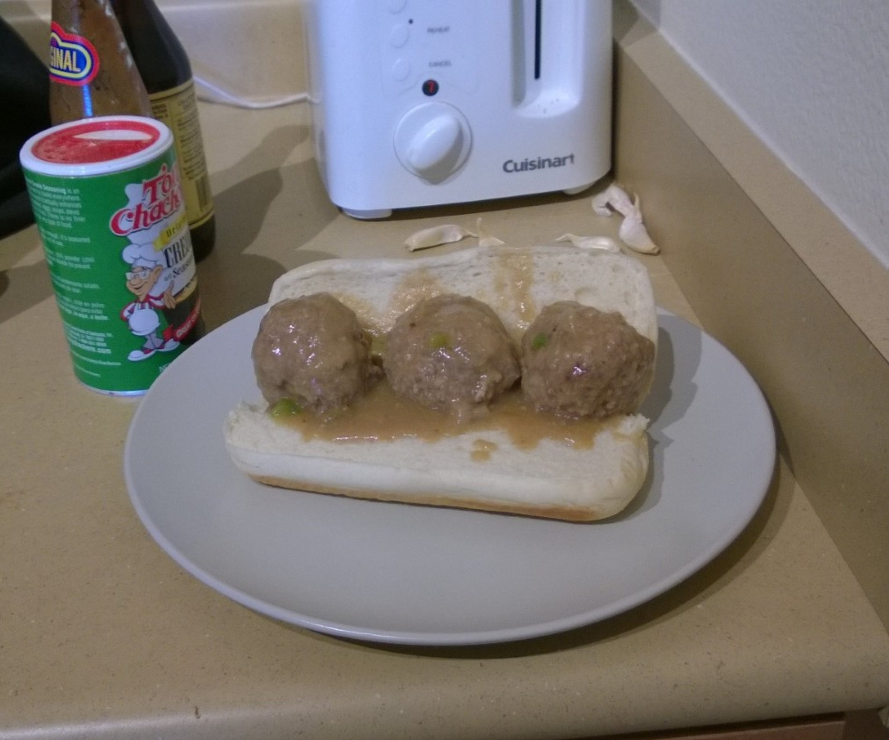

Cajun Meatball Stew

Ingredients
Stew
- ¾ C vegetable oil
- 1 C all-purpose flour
- 2½ qt water or beef stock
- 3 C onions, finely chopped
- 1½ C bell peppers, finely chopped
- 1 C celery, finely chopped
- 4 garlic cloves, minced
- 1 tsp dark soy sauce
Meatballs
- 2 lbs ground chuck
- 2 large eggs
- ¼ C milk
- 1 tbs Worcestershire sauce
- ½ C fresh parsley, chopped
- ½ C plain breadcrumbs
- ¼ C green onion, chopped
- 1½ tsp salt
- 1½ tsp Cajun seasoning
- 1 tsp black pepper
- 1 tsp garlic powder
Directions
- Make Roux: Heat oil in a Dutch oven over medium-high. Add flour and stir constantly until very dark brown (nearly chocolate-colored), taking care not to burn.
- Add Trinity: Stir in onion, bell pepper, and celery. Reduce heat to medium and cook until onions are translucent. Add water or beef broth, bring to a boil, then reduce to a simmer.
- Make Meatballs: Combine ground chuck with remaining onion, bell pepper, celery, minced garlic, eggs, milk, Worcestershire, dark soy sauce, parsley, breadcrumbs, salt, pepper, and cayenne. Mix well and form meatballs (about 1½-2").
- Cook Meatballs: Gently add meatballs to the gravy. Do not stir for 20 minutes to prevent breaking. Simmer over medium‑low until gravy thickens.
- Finish: Skim excess fat. Adjust seasoning with salt, pepper, and cayenne. Stir in remaining garlic, parsley, and green onions; cook 5 minutes more.
- Serve: Spoon over hot cooked rice. Optional toppings include grated cheddar; serve with green peas or corn on the side.
Chef's Notes
- Don’t pack the meatballs tightly - shape them just enough to hold together for a tender texture.
- Season the meat more than you think you need; under‑seasoned meatballs fall flat.
- Corn and okra make nice additions to the dish.
- You can pre-cook meatballs in the oven at 400°F for 15 minutes before adding them to the gravy.
- These meatballs are also excellent in a meatball sub
Michael Fritsche
mbf@fritsche.org